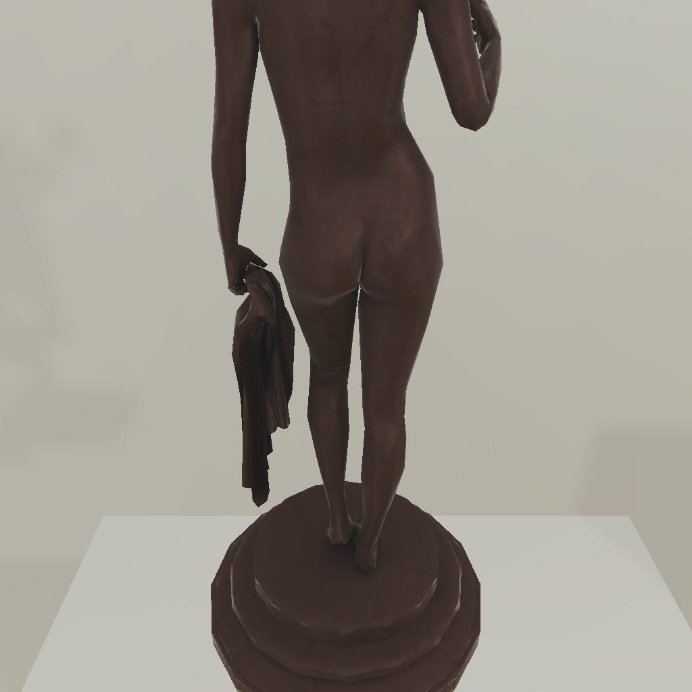

---------------------------------------------------------task: 4---------------------------------------------------------
--------------------------------------------------------------------------------------------------------------------------------------------------------------------
--------------------------------------------------------------------------------------------------------------------------------------------------------------------
Step:--------------------------------------------------------------------------14-------------------------------------------------------------------------------
----------------------------------------
VLM Prompt:
Image1:
**Instruction**
1. Analyze the provided image to identify all visible household objects, focusing on those relevant to the task description "examine the statue with the floorlamp."
2. Use the analysis of the image and the task hint "The agent must find an object of the desired type, locate and turn on a light source with the desired object in-hand." to answer the question: what is the most reasonable action in the choices for the task description "examine the statue with the floorlamp"?
4. Decide and write the answer using the template: The answer is: (i): , where i is the real number. If there is no desired object in the image, search every place based on **Initial Observation** to find the object. And if no one is exactly correct, choose a similar answer.
**Initial Observation**
You are in the middle of a room. Looking quickly around you, you can see armchair (1), coffeetable (1-2), sidetable (1), garbagecan (1), drawer (1), sofa (1), diningtable (1)
**Answer Choices**
(1): go to armchair 1
(2): go to coffeetable 1
(3): go to garbagecan 1
(4): go to drawer 1
(5): go to sofa 1
(6): go to coffeetable 2
(7): go to diningtable 1
(8): put statue 1 in/on sidetable 1
**Answer**
Let's think step by step by following the instructions.
----------------------------------------
----------------------------------------
Original Response:
The provided image shows a statue, which is the object we need to examine with a floorlamp. However, there is no floorlamp visible in the image. According to the task hint, we must find a light source and turn it on while holding the desired object, which in this case is the statue.
Based on the **Initial Observation**, we have several household objects listed, but none of them are a floorlamp. Therefore, we must search every place to find the object.
Since none of the answer choices directly mention finding or turning on a floorlamp, we must choose the action that is most closely related to the task description. The closest action that could potentially lead to finding a floorlamp would be to search the furniture pieces where a floorlamp might be placed or stored nearby, such as near an armchair, sofa, or tables.
The answer is: (2): go to coffeetable 1. This action could potentially lead to finding a floorlamp nearby, as floorlamps are often placed next to or in the vicinity of coffee tables in living spaces.
----------------------------------------
----------------------------------------
>>> Refine Original VLM Response and Get Pure Action: go to coffeetable 1
----------------------------------------
-----------------------------------------------------------------
Running time: 10.523782730102539 seconds
Total Money: 1.2556499999999997
-----------------------------------------------------------------
-----------------------------------------------------------------
Text Observation:You arrive at loc 1. On the coffeetable 1, you see a television 1.
-----------------------------------------------------------------
UNSUCCEED